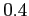

Next: TIMESTEP
Up: GNU Archimedes Commands Syntax
Previous: FINALTIME
Contents
This command is only needed if the user is using the simplified MEP model for electrons. Indeed, in this case the relaxation time approximation for the electrons energy can be equal to zero (as the reader can see from the definition of the function  ) comporting the presence of NaN. This is avoided by specifying a value for
that will be used in the case it is equal to zero. The command is invoked as it follows
) comporting the presence of NaN. This is avoided by specifying a value for
that will be used in the case it is equal to zero. The command is invoked as it follows
TAUW value
where
is the value specified. Usually a good value is 
picoseconds. We report an example
TAUW 0.4e-12
As the reader can see from the example, the unit of measure is the second.
Didier Link
2007-05-18